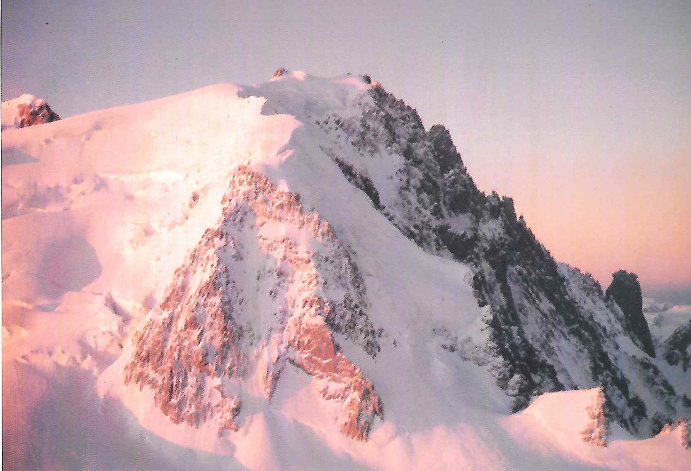

Two Weeks Older, Years Wiser
by Claire Coates
Sitting in the warmth and comfort of my home, Alpine adventure seems very far away indeed. Knowing the tricks that memory and time can play, on countless occasions in the Alps last summer I told myself sternly and fiercely, often through hot tears: “You will remember how evil this feels. You will remember that it’s sheer hell.”
I was very naive and unsuspecting when I left for the Alps for the first time the previous July. Excited and apprehensive, yes, but sure of myself. I knew the environment was dangerous but, after all, I had prepared very carefully, I had trained, was as fit as I had ever been in my life, had good safe equipment and was to be coached through my first Alpine experiences by a professional guide. I was looking forward to it very much.
I travelled out a few days early so had some time to spare before I was due to join the guide. The campsite at Argentiere had a lively, British, climbing community and those first few days were easily filled, walking and climbing with new friends and getting used to the Alpine scale of things. With two people from the Red Rope MC I climbed the Papillons Ridge in fine conditions, thoroughly enjoying the stunning positions and interesting rock climbing. The altitude caused no problems, neither did other first experiences like climbing with my rucksack and long abseils. We had a long walk off the mountain because we missed the last telepherique down to Chamonix, but it was a delightful walk along green paths, made even better by eating wild raspberries and listening to booming rock music echoing up from a concert in the town below. It was a sound and optimistic beginning.
My guide was in fact the only British woman qualified as a guide, well respected and with a great deal of experience of Alpine courses. She worked with Tim, a good, strong climber who also knew the Alps well. The two people in the group with me the first week were a married couple, Karen and Kevin, who had walked in the Alps before but had little climbing experience. The second week we were joined by two men with a burning ambition to reach the summit of Mont Blanc nothing else, just that. John and Ron had virtually no experience of any climbing and I had never set foot in the mountains on snow or ice before. A challenge to the sturdiest of teachers, I would say! Little did we know what fate had in store for us.
We began our training on the Mer de Glace. Those of you who are familiar with Chamonix will know that there is a perfectly good train which takes you and hundreds of tourists to Montenvers, only a short walk from the glacier. But for us, walking was not to be shirked. What’s more, I foolishly wore my new plastic boots personal torture chambers which pull you down with every step and slowly pot roast your feet. By the time we reached the glacier, what with the boots, a rucksack that was far too heavy, the steepness of the hill and dehydration, I felt as if I were going to die. It was a sensation I was going to get used to. Donning crampons for the first time, I felt about ten months old, learning to walk again. Small, tentative steps, scowling at our guide when she shouted at me to jump around. Then, in order to practice, we walked unroped around the glacier, picking our way over crevasse bridges, up and down slopes very, very, slowly. Fear seemed to have stolen my sense of balance. We stopped to do some rope work and learn safety techniques, including crevasse rescue. One by one we played rescuer and rescued. Weighing much less than the others, it seemed at times that my legs and back would snap. I moaned, a lot.
I was encouraged because for the next couple of days we were to leave the ice and turn to rock. We did two long routes on the Massif des Aiguilles Rouges, bivvying overnight at the Index station. At this time there was very little snow and the normally snow covered gullies were full of hot, broken rocks which took you sliding back as you tried to make upward progress. Soul destroying. Back breaking. Painful. The rock climbing was sweet release, technically easy and in fine weather. At the end of the rope I was left to my own devices and I enjoyed the marvellous views and some relaxation.
Following this, on our fourth day we set off for the snow, planning to do the Petite Aiguille Verte on the way to the Argentiere hut. Unfortunately I was struck with altitude sickness on the ascent and had to be left sitting on a rock in the hot sun watching enviously as the others went on up to their first “snow” summit. The sickness became worse and I made the arduous trek to the hut feeling only semi conscious and in need of a great deal of support. Staying in the hut brought more new experiences a whole new regime. There was so much to remember, like getting water for the next day in case the pipes froze overnight and arranging your gear so that nothing was forgotten or lost. I was thrown into a permanent state of panic.
At 3 am, a gentle whistle roused our dormitory and, bleary eyed, we prepared for the day. It took us forty minutes and our guide was furious we would have to manage in a third of the time in future! So, late, we set off for the Aiguille Tour Noir. Before long, unable to keep up and still feeling sick and dismal, I lost sight of the others. I had come to the Alps hoping to learn to love the mountains and I was beginning to hate them. Once again I was left behind, this time in pitch darkness and freezing cold, waiting for dawn so that I could safely return to the hut and all the while wondering if I could afford the air fare home. I felt a mixture of disappointment, frustration, anger and fear. But if I thought that I would be let off that lightly, I was wrong. The next day we were marshalled swiftly out I think I slept in everything except my glacier cream and even did without a drink or a visit to the toilet to be ready in time. After much faltering, cajoling, complain ing and encouraging, by mid morning I had reached the summit of the Aiguille d’Argentiere. What an enormous sense of relief and achievement. I didn’t want to go home any more.
The elements then decided to intervene and we had two days of continuous torrential rain, which meant one day’s rest and one day in a flood on the Bossons glacier, trying to front point up the steep sides of crevasses as water poured down sleeves, gloves, trousers and socks and lightning cracked around us. Only when we had achieved what we had come for were we allowed to retreat to the Bar Nationale. Once down to the car, I incurred our guide’s wrath and a new reputation by removing all my clothes at the roadside. Dry clothes seemed worth any consequences.
We spent the next night at the Albert Premier hut and although a snowstorm delayed our start we conquered the West and South Summits of the Aiguille de Tour. After a great day rock climbing at Les Gaillands, which reminded me of home and restored some confidence, we set off for our last expedition. We were to do part of the Midi Plan, bivvy in the Midi station and tackle a final route on the morning of the day we were due to travel home, leaving Chamonix at noon. Quite a schedule.
There had been extremely heavy snowfalls up high the Papillons Ridge I had rock climbed only days before was covered in snow. With hindsight, we should not have attempted the Midi Plan in those conditions, with deep snow blocking the normal route. We soon ran into trouble, confronted by difficult, technical, rock climbing in full ice gear. It was a traumatic and dangerous time, ending in an abseil escape and retreat to the Midi station. This experience played a large part in my choice of route for the following day. Half of the group was to tackle the the Cosmiques Ridge , whilst Tim would do Mont Blanc de Tacul. I had no desire to repeat the events of the Midi Plan and was very keen to climb over 4000m, so I chose to go with Tim. We had a magnificent meal in our comfortable bivvy and enjoyed a superb sunset. Spirits were high.
At 3 am Tim, Ron and I set off, leaving the others sleeping. The ascent was marvellous. By this time I was beginning to get fit enough and we progressed quickly, leaving two parties from Cardiff University in our wake. Despite the deep new snow we were on the summit before 7 am, accompanied by a very spectacular dawn. I felt on top of the world. Beginning our descent, we passed the other British groups and reached the top of the main slab.
Imagine making your way gingerly down a narrow ice ledge, balanced on crampon points and ice axe, expectantly working your way towards the safety of the snow slope. And then……. that slope moves, lifts itself from the face of the earth and hurls itself down the mountainside. Half a mile of snow, at least twenty feet deep, suddenly erupting, causing a thunderous roar. Nothing in the path of that avalanche could have survived. It was a monster. A monster no more than fifty feet away. Tim screamed at us and literally dragged Ron and myself back up the ice ledge away from the chaos beside us. I have never, ever, been so frightened.
But the trauma had only just begun. How were we to get off the mountain? As we stood debating the horrific options with the other groups who had reached us by this time, a French policeman was dropped from a helicopter. His interest, understandably, was to discover if there had been anyone on the slab. Miraculously there had not. He offered no advice as to our descent we were the mountaineers he said, we should tell him! He would be willing to pick up our bodies if we risked triggering another avalanche on the cracked and unstable slab, but he was not interested in us alive. Fortunately common sense prevailed. It had been the largest avalanche of the summer there and to have had to deal with nine British bodies would have been inconvenient. So, the helicopter came back and in circumstances that seemed more appropriate to the television screen, we were whisked from the mountain top to the valley.
The weird helicopter flight which seemed to turn the world upside down and the sight of rescue workers and dogs on the mass of broken snow brought home the awful reality of it all and I cried and cried. We should have been dead. Hesitat ing on the summit for a final photograph, stopping to adjust my crampon, moving so slowly on that ledge the reasons we hadn’t been swept away came back to us in the sudden realization of what might have been. We had to walk from the Vallee Blanche back to the Midi station, interrupted mid way by another policeman, dropped from a helicopter with more questions. The other party, who knew we had reached the summit because they had watched our head torches in the early morning, had witnessed the whole affair but could not know we were safe until we arrived back. Their relief was almost as great as ours.
I was glad to say goodbye to the Alps. They had been hostile and frightening for much of my time there. I had felt bullied and lonely and longed for the security of The Peak District, my home and friends. Without pressure from our guide I would undoubtedly have given in many times to physical discomfort and cowardice. As it was, we had achieved an incredible amount in the time available. Despite the aggressive conditions, I had learnt and achieved more than I had thought possible about climbing, the mountains and most of all myself, what I am capable of and what my true limitations are. For the future I know I must be stronger, fitter, more determined and more self reliant to survive in the mountains, and even then it will still be hard. I have just finished reading “The White Spider” which chronicles the savage history of the North Face of the Eiger. In spite of my experien ces in the Alps I felt inspired and challenged by those awesome tales, not intimidated and frightened. Perhaps those tricks of time and memory have won after all. Or perhaps that’s the magic of mountaineering.

Figure 1: Mont Blanc de Tacul